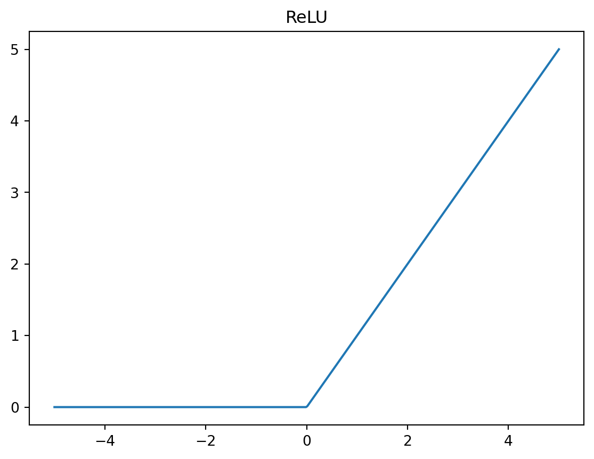
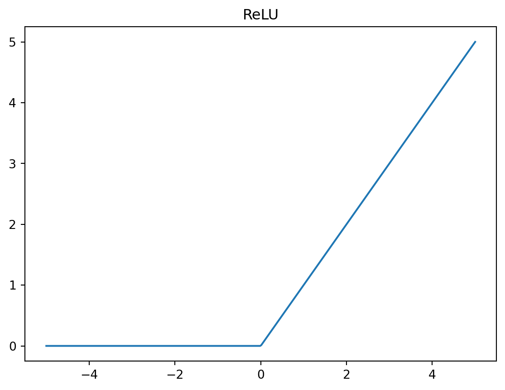

Show code
import numpy as np
import matplotlib.pyplot as plt
x = np.linspace(-5, 5, 400)
y = np.maximum(0, x)
plt.plot(x, y)
plt.title("ReLU")
plt.show()
Neural networks are often described as black boxes. However, shallow neural networks can be understood precisely by decomposing them into simple mathematical components.
The goal of this note is to show that a neural network is a structured composition of linear functions and activation functions, rather than a mysterious nonlinear system.
神经网络并不是一个真正的 black box， 而是由 linear function 和 activation function 组成的可分析计算结构。
A shallow neural network is defined by its depth, not by its simplicity.
It has:
Formally, the computation has the structure
\[ x \;\longrightarrow\; \text{linear} \;\longrightarrow\; \text{activation} \;\longrightarrow\; \text{linear} \;\longrightarrow\; y \]
Equivalently, this can be written as
\[ h^{(1)} = a(W^{(1)}x + b^{(1)}), \qquad y = W^{(2)} h^{(1)} + b^{(2)}. \]
This is one hidden layer.
A deep neural network simply stacks this same pattern multiple times:
\[ x \;\longrightarrow\; (\text{linear} + \text{activation})^{L} \;\longrightarrow\; y \]
Formally, a deep network is defined by
\[ \begin{aligned} h^{(1)} &= a(W^{(1)}x + b^{(1)}) \\ h^{(2)} &= a(W^{(2)}h^{(1)} + b^{(2)}) \\ h^{(3)} &= a(W^{(3)}h^{(2)} + b^{(3)}) \\ &\;\vdots \\ y &= W^{(L+1)}h^{(L)} + b^{(L+1)}. \end{aligned} \]
The basic building blocks are identical. Depth only increases how many times the pattern is composed.
Shallow和 Deep的区别，本质上在于 hidden layer 有几层。 只有一层的就是shallow，有多层重复堆叠的是deep
A shallow neural network can be understood as a function that maps inputs to outputs, with its behavior controlled by a set of parameters:
\[ y = f(x; \phi) \]
Rather than working with an abstract definition, we begin with a simple example that illustrates how this function is constructed.
Consider a network that takes a single scalar input \(x\) and produces a scalar output \(y\). The output can be written as
\[ y = \phi_0 + \phi_1 a(\theta_{10} + \theta_{11} x) + \phi_2 a(\theta_{20} + \theta_{21} x) + \phi_3 a(\theta_{30} + \theta_{31} x). \]
This expression reveals the internal structure of the network. The computation proceeds in three steps:
Linear responses
The input \(x\) is passed through several linear functions.
Activation
Each linear response is transformed by an activation function \(a(\cdot)\).
Aggregation
The activated responses are weighted, summed, and shifted to produce the final output.
To complete the specification of the model, we must choose an activation function. In this chapter, we focus on the rectified linear unit (ReLU), defined as
\[ a(z) = \text{ReLU}(z) = \begin{cases} 0, & z < 0 \\ z, & z \ge 0 \end{cases} \]
The ReLU function passes positive values unchanged while suppressing negative values. As a result, each hidden unit contributes to the output only in certain regions of the input space.
因为 activation function（这里是 ReLU）是套在 linear function 外面的，
比如
\[
h(x) = \text{ReLU}(\theta_0 + \theta_1 x),
\] 只有当内层的 linear function 大于 0 时，这个 hidden unit 才会“被激活”。
当 ReLU 输出为 0 时，这个 hidden unit 对最终输出 \(y\) 没有贡献；
只有在满足条件的输入区间内，它才参与到输出中。
所以说：每个 hidden unit 只在 input space 的某些区域起作用。
Without activation functions, a neural network reduces to a linear model.
\[ \sum_i (\alpha_i x + \beta_i) = Ax + B \]
No matter how many layers or units we use, the model remains linear.
Activation functions break this collapse by introducing nonlinear gating behavior.
Crucially, this gating determines where a linear function contributes in the input space.
Using ReLU as the activation function,
\[ \text{ReLU}(z) = \max(0, z), \]
each hidden unit is active only in part of the input space.
As a result:
import numpy as np
import matplotlib.pyplot as plt
x = np.linspace(-5, 5, 400)
y = np.maximum(0, x)
plt.plot(x, y)
plt.title("ReLU")
plt.show()
As the number of hidden units increases:
With enough hidden units, a shallow neural network can approximate any continuous function on a compact domain.
This is the intuition behind universal approximation.
hidden units 越多， 整体函数就可以在更多区间内调整形状， 从而更精细地逼近真实的目标函数。
For multiple outputs, hidden units are shared:
\[ \begin{aligned} y_1 &= \phi_{10} + \sum_i \phi_{1i} h_i \\ y_2 &= \phi_{20} + \sum_i \phi_{2i} h_i \end{aligned} \]
Hidden units learn features that are useful for all outputs, while each output learns its own linear combination.
在 2D 输入、多个输出的情况下， hidden units 先共同把 input space 划分成若干区域（由 ReLU 决定）。
在每一个区域内， 不同输出只是对同一组 hidden units 采用不同的线性组合， 因此：
With multivariate inputs, each hidden unit computes
\[ h_i(x) = a(\theta_{i0} + \theta_{i1} x_1 + \theta_{i2} x_2 + \cdots) \]
Geometrically:
The computation pattern remains unchanged.
Parameter count for a 1-hidden-layer network
For a neural network with one hidden layer:
\[ \text{Parameters} = (d \times H + H) + (H \times K + K) \]
where: - \(d\): number of inputs
- \(H\): number of hidden units
- \(K\): number of outputs
Example
For \(d = 3\), \(H = 3\), \(K = 2\):
\[ (3 \cdot 3 + 3) + (3 \cdot 2 + 2) = 12 + 8 = 20 \]
So the network has 20 parameters in total.
Neural networks are not black boxes. They are sums of gated linear functions, where activation functions determine where each linear component applies.